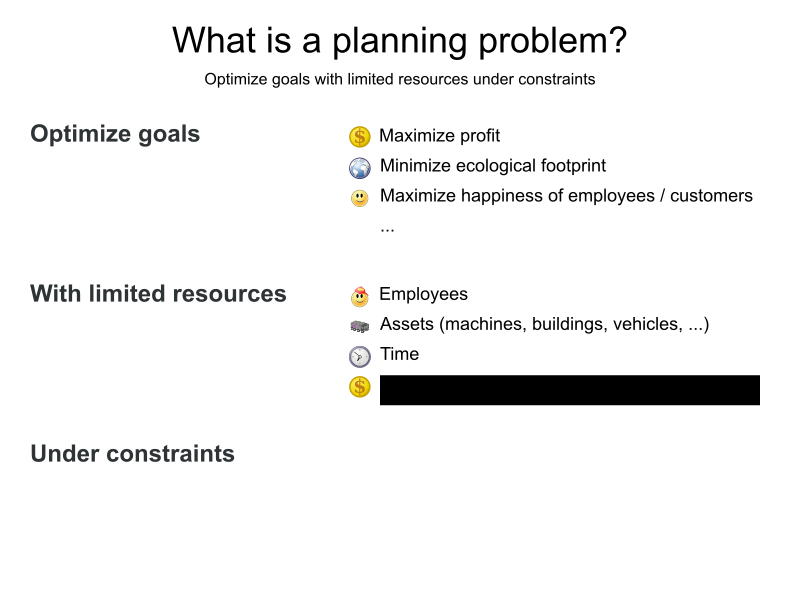
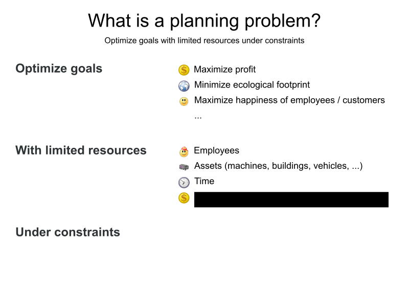
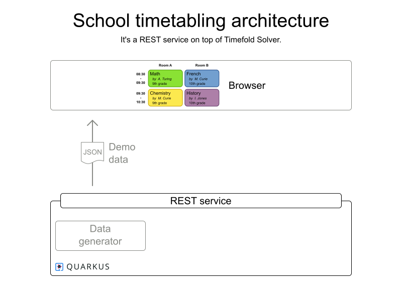
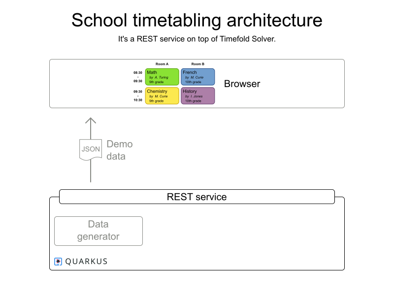
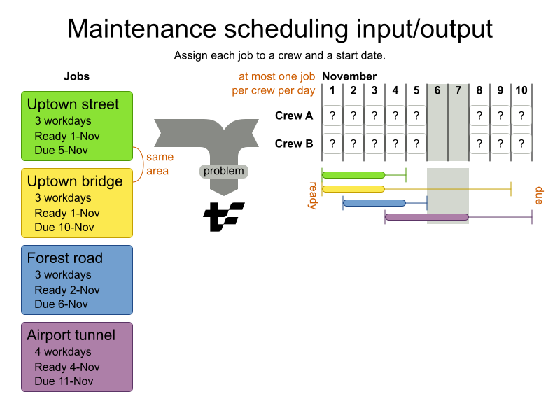
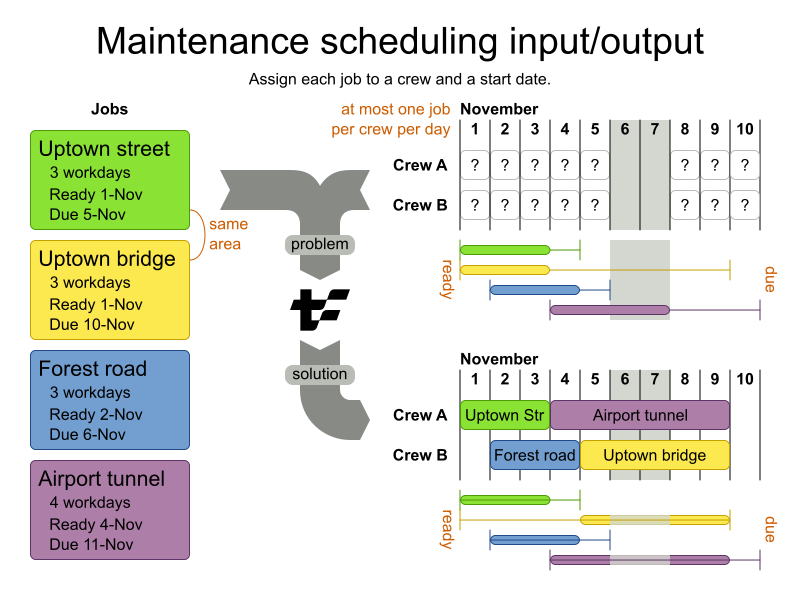
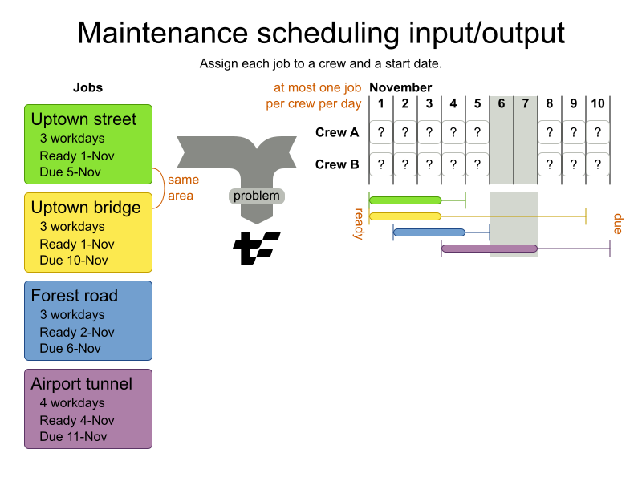
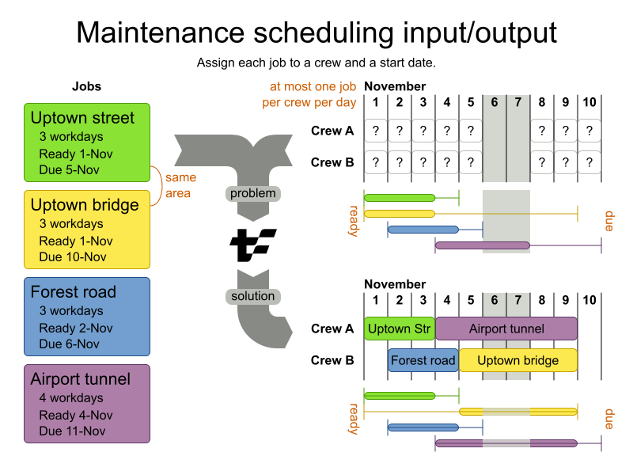
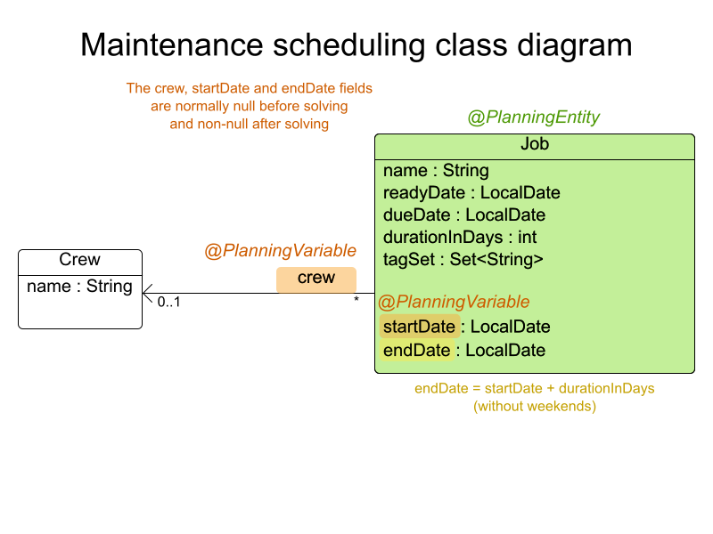
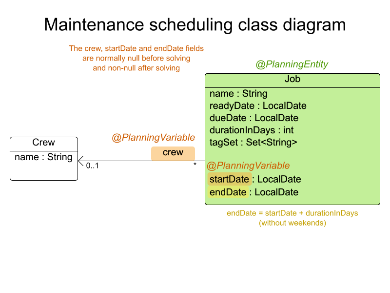

Repo: https://github.com/TimefoldAI/timefold-quickstarts
Introduction to Timefold
by Tom Cools and Lukas Downes
Workshop preparation
- Clone https://github.com/TimefoldAI/timefold-quickstarts
- Run java/school-timetabling
Checks:
- ✅ you should see the UI
- ✅ should be able to click the "solve" button.
The world is full of planning problems
 


For example


The world is full of
scheduling problems
Optimize goals with limited resources under constraints
Some are automated
Few are optimized
Let's optimize them
with Java and AI
Is optimization worth it?

Vehicle routing case study
Expected: -1% driving time
Result: -25% driving time
⇒ -10 million kg CO² emission per year
⇒ -100 million $ cost per year
School timetabling
Schools often have multiple full-time employees to create the timetables. üò±


The web UI

 



Implement yourself?
Planning optimization made easy
- Library of optimization algorithms
- AI, not ML
- Open Source (Apache license)
- Actively developed by our Open Core company


DEMO
School timetabling - Exercise
üíª Adapt the code üíª
Code in repository: java/school-timetabling
- Marie Curie doesn't like to teach in the afternoon
- Don't teach History and Spanish at the same time
- Make the teachers come to school every day
- Give the teachers the most terrible schedule gaps
Note: Remember to also test your constraints üòâ
Maintenance Scheduling
 



The web UI


 

DEMO
Machine Scheduling - Exercise
üíª Adapt the code üíª
Code in repository: java/maintenance-scheduling
- Execute all jobs as early as possible (front load)
- Make half of the jobs JIT=true. Do all JIT jobs as late as possible.
- Spread jobs fairly across the teams
Note: Remember to also test your constraintsüòâ
Conclusion
The world is full of
scheduling problems
Optimize goals with limited resources under constraints
Using Timefold
üñä Model domain
⚖️ Define constraints
üöÄ Run!
Continue learning
Experiment with other quickstarts
- Go to timefold.ai
- Click the Quickstarts repo button.
- Pick a quickstart from the README.
- Run it:
$ git clone https://github.com/TimefoldAI/timefold-quickstarts.git
...
$ cd timefold-quickstarts/java/maintenance-scheduling
$ mvn quarkus:dev
...Q & A
| Learn more | timefold.ai |
|---|---|
| Feedback |
|
| Get started |

|